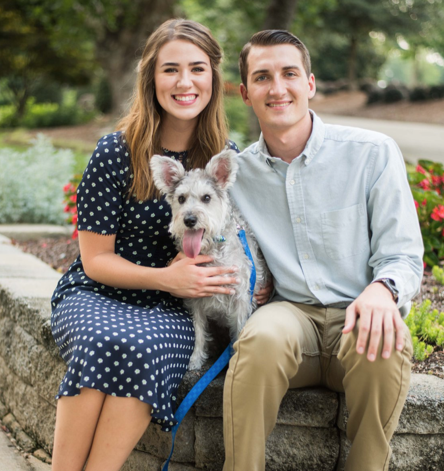
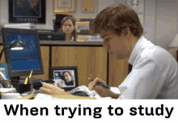

My name is Austin Shively. I am a Senior at the University of Georgia, pursuing a degree in Psychology. My dream has always been to open my own counseling practice. This past summer I got engaged to my Fiance Abbie-Leigh Goss, whom I met during the Summer of 2017. The story of how Abbie and I met is extraordinary! I was shopping in Target with a friend of mine. We walked over to the iPhones on display in the electronics section. My friend, without my knowledge took a picture of me with one of the display iPhones. We then left, within minutes of Abbie and her friends arriving. She and her friends too meandered to the iPhones on display, where she saw the picture of me on the phone's memory. She liked what she saw and decided to post the picture of me on her social media with the hashtag #FindTargetGuy. Fortunately enough, a good friend of mine had just met Abbie a few weeks before and he noticed her post and connected us. The rest is history! We even have a dog, he is a Schauzer whose name is Toaster. 
I am from the small town of Lincolnton Georgia. Coming from a High-School graduating class of 78 people to roughly 35,000 people on the UGA Campus was quite the shock initially. But, I soon learned that the campus is as small or as large as you make it. I have met many friends but perhaps the best thing that has happened to me on this Campus is deciding to join the UGA Men's Glee Club during my freshman year. I have met a vast mulitude of friends and interesting people. I have so enjoyed being in Men's Glee that I am in fact the President of it! As well as Men's Glee I have had the pleasure in singing with the Hodgson's Singers, Collegium Musicum, Universi ty Chorus, Veritas Vocal Ensemble, and both The Athens First United Methodist Church Sanctuary and Chamber Choirs.Throughout my experience with these many choirs, one of the moments which I treasure most was being able to share the stage with The King's Singers, a renowned British Vocal Group. The following link shows me, located centrally, singing with the UGA Collegium Museum. Collegium Musicum Performance
One of the greatest parts about going to School at the University of Georgia has been being able to be a part of the University's great football tradition by attending the football games. The feeling that accompanies a home game "between the hedges" is second to none. I have always been a massive UGA Football fan so being a student here has only further strengthened my passion for the game. It doesn't hurt that UGA Football has reached the upper echelon of College Footbal teams, as it is perenially ranked in the top 5. For your edification, I have charted all of UGA's Football games so far in the 2018 season.
| Location | Score |
|---|---|
| Sanford Stadium | UGA 45 Austin Peay 0 |
| Williams Bryce Stadium | UGA 41 South Carolina 17 |
| Sanford Stadium | UGA 49 Middle Tennessee 7 |
| Faurot Field at Memorial Stadium | UGA 43 Missouri 29 |
| Sanford Stadium | UGA 38 Tennessee 12 |
| Sanford Stadium | UGA 41 Vanderbilt 13 |
| Tiger Stadium (Death Valley) | UGA 16 LSU 36 :( |
| TIAA Bank Field | UGA 36 Florida 17 |
| Kroger Field | UGA 34 Kentucky 17 (Clinched the SEC East) |
| Sanford Stadium | UGA 27 Auburn 10 |
| Sanford Stadium | UGA 66 UMass 27 |
Below you will find an itemized list of the things that are imperative to being a successful student.
